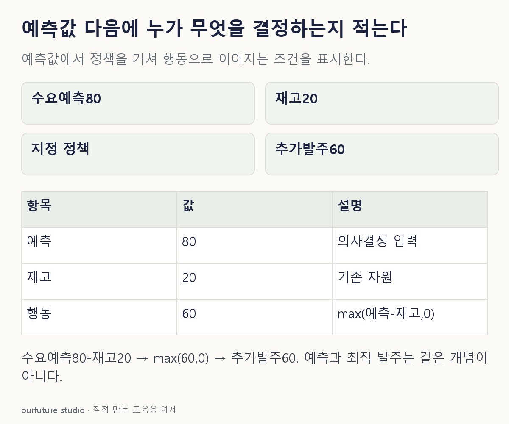

조건을 바꾸며 확인하기
자체 max 정책의 산술 결과이며 현실의 최적 발주·비용 절감·업무 효과를 입증하지 않는다.
설명 그림과 비교하기
아래 그림과 표는 고정된 설명 예제입니다. 기본·변형 중 어떤 조건인지 캡션을 읽고, 바꾼 입력의 결과는 계산 칸에서 확인하세요.

같은 문제를 직접 골라 보기
내일 수요 예측은 80개, 재고는 20개다. 입고·폐기·안전 재고·포장 제약은 없다. 단순 정책은 추가 발주=max(예측 수요−재고,0)이다.
조건을 더 바꾸면?
다른 조건과 정책은 같고 재고만 90개로 늘어나면 추가 발주량은?
변형 풀이 확인
max(80−90,0)=0개다.
차이는−10이지만 정책의 하한이 0이다. 음수 발주는 허용하지 않는다. 실제 반품이나 폐기 결정은 이 단순 발주 정책의 범위 밖이다.
예측값 옆에 사용자·행동·조건.